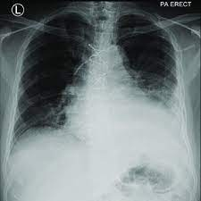

Acute postoperative is a condition that occurs after surgery and is between normal and acute respiratory failure:
Symptoms: Hypoxia, slow weaning, excessive secretions, and moderate pulmonary toilet
Criteria: P/F ratio between 300 and 399, modest hypercapnia, and no acidosis
Common causes of acute postoperative pulmonary insufficiency include: Atelectasis, Fluid overload, Aspiration, Pulmonary edema, and Pulmonary embolism.
Risk factors for postoperative respiratory insufficiency include:
To prevent or correct respiratory insufficiency, patients should be assessed before surgery, monitored during and after the procedure, and treated aggressively.
